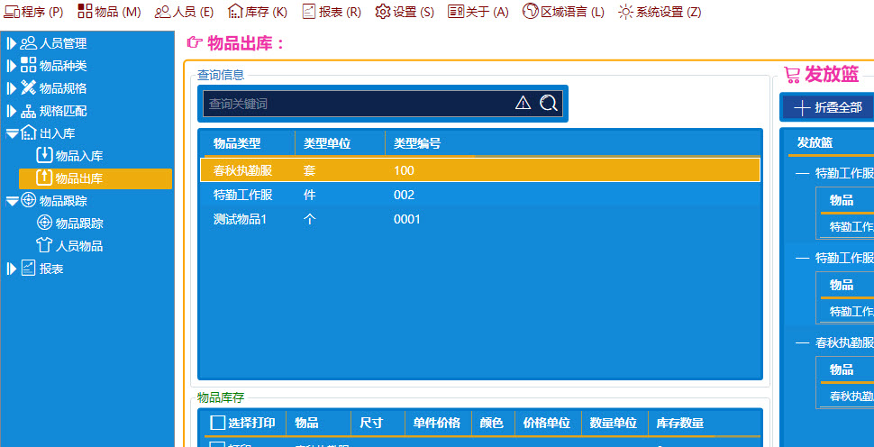

<div id="single-portfolio">
	<div id="portfolio-details" class="container">
		<a class="close-folio-item" href="#"><i class="fa fa-times"></i></a>
		
		<div class="row">
			<div class="col-sm-9">
				<div class="project-info">
					<h3>iStore进销存管理系统</h3>
					<p>该项目为政府后勤部门，提供人员管理、服装管理、劳保用具管理、进销存管理等功能；</p>
					<p>同时提供各种报表统计、打印、导入导出Excel，文档编辑等功能。</p>
				</div>
			</div>
			<div class="col-sm-3">
				<div class="project-details">
					<h3>项目详细</h3>
					<p><span>平台: </span>Win xp ,win 7,win vista, win 8 ,win 10</p>
					<p><span>日期:</span> 1 Oct 2016</p>
					<p><span>需求:</span> 功能, 设计, 算法</p>
				</div>  
			</div>
		</div>
	</div>
</div>